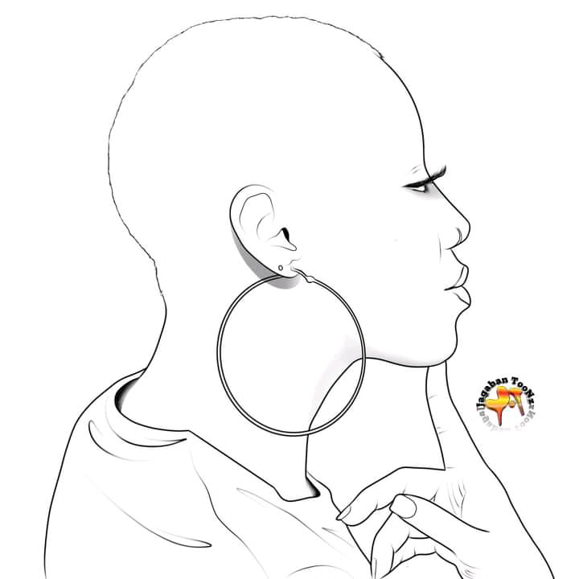

ADOBE PHOTOSHOP
Beginning in Adobe photoshop
1.What is photoshop?
Adobe Photoshop is a raster graphics editor developed and published by Adobe Inc.
for Windows and macOS. It was originally created in 1988 by Thomas and John Knoll.
Since then, the software has become the industry standard not only in raster
graphics editing, but in digital art as a whole. The software's name is often
colloquially used as a verb (e.g. "to photoshop an image", "photoshopping", and
"photoshop contest")[5] although Adobe discourages such use.[6] Photoshop can edit
and compose raster images in multiple layers and supports masks, alpha compositing
and several color models including RGB, CMYK, CIELAB, spot color, and duotone.
Photoshop uses its own PSD and PSB file formats to support these features. In
addition to raster graphics, Photoshop has limited abilities to edit or render
text and vector graphics (especially through clipping path for the latter),
as well as 3D graphics and video. Its feature set can be expanded by plug-ins;
programs developed and distributed independently of Photoshop that run inside
it and offer new or enhanced features.Photoshop's naming scheme was initially
based on version numbers. However, in October 2002 (following the introduction of
Creative Suite branding), each new version of Photoshop was designated with
"CS" plus a number; e.g., the eighth major version of Photoshop was Photoshop CS
and the ninth was Photoshop CS2. Photoshop CS3 through CS6 were also distributed in
two different editions: Standard and Extended. With the introduction of the Creative
Cloud branding in June 2013 (and in turn, the change of the "CS" suffix to "CC"), Photoshop's
licensing scheme was changed to that of software as a service subscription model. Historically,
Photoshop was bundled with additional software such as Adobe ImageReady,
Adobe Fireworks, Adobe Bridge, Adobe Device Central and Adobe Camera RAW.
Alongside Photoshop, Adobe also develops and publishes Photoshop Elements,
Photoshop Lightroom, Photoshop Express, Photoshop Fix, Photoshop Sketch
and Photoshop Mix. As of November 2019, Adobe has also released a full
version of Photoshop for the iPad, and while initially limited, Adobe plans
to bring more features to Photoshop for iPad.[7] Collectively, they are branded a
s "The Adobe Photoshop Family".
2. What is photoshop ability
You've heard people talk about Adobe Photoshop, but perhaps you're wondering what you can
actually do with Photoshop? In this article we'll try to answer that question by listing
what Photoshop is capable of.
For starters, understand that Photoshop is one of the most powerful image editing applications
on the market. And when it comes to working with photographs, there's almost nothing it can't do.
Even the name "Photoshop" is a byword for photo manipulation, and since its launch more
than 25 years ago, the program has picked up lots of new features. Some of which
we'll discuss below.
1. Edit Photos With Photoshop
When we're asking ourselves what Photoshop can be used for, it's important to note than
some of its current tools originally started in other programs like Adobe Illustrator.
In recent years, Adobe has developed the Creative Cloud suite into a complex
network of overlapping apps.
If you have access to the full Creative Cloud there are tons of benefits to these
overlapping apps. One of the things you can do with Photoshop that's always been there,
however, is its ability to edit photos.
Through it, you can:
Enhance colors, add contrast, or adjust sharpness and blurriness.
Retouch an image to turn it into a magazine-styled, magazine-quality layout.
Add someone to an existing image.
Fix up old photographs to make them look like they were printed yesterday.
Crop an image any way you like.
Combine multiple photos into a single image.
Basically, if there's any conceivable way to edit an image, you can do it
with Photoshop. There's definitely some competition out there for the category
of "best photo editor," but Photoshop is still the industry standard.
If you want to get the most out of the program, here are some Photoshop workflow
tips to improve your image editing.
2. Create a Digital Painting With Photoshop
What can Photoshop do, beyond edit photos? Well, most paintings, cartoons, book covers,
and other art that you see online isn't created with a paintbrush and canvas these days.
I mean, it is, but that paintbrush and canvas are digital. The images
that you see were designed on a computer.
Photoshop is just one of the more popular apps out there for creating digital art.
While painting styles can range the gamut depending on what's being drawn,
you can absolutely emulate old-school, brush-in-hand artwork through Photoshop.
With the program as your trusted canvas, and a tablet as your paintbrush, you can get
started on your new masterpiece right away.
Through using blending brushes or layers, you can also combine different colors to create
a painting. Additionally, you can apply digital paintbrush effects to your image, ranging
from oil textures, to charcoal, and ink.
These effects often come in the form of custom brushes, which can be downloaded through Adobe
or through a third-party vendor. You can also create your own. And here's
how to install brushes on Photoshop.
3. Use Photoshop for Graphic Design
When I was a student studying design---and my budget was more limited---I often asked myself
"how can I push this program further?"
I needed to design illustrations and graphic posters, but I was hoping to cut back on the time
needed to learn multiple programs. I also didn't want to buy a bunch of apps at once.
Fortunately, many of Adobe's design-specific tools have been incorporated into Photoshop as well.
For example, the pen tool is a core feature of Adobe Illustrator. Now it's a staple
in almost all Adobe apps.
While Photoshop is not the main graphic design app out there, it's still very competent and offers
a lot of flexibility. If you want to try out some common tools in Photoshop before moving on
to Illustrator, Photoshop is a great place to start.
It's also a good program if you only do graphic design work occasionally, instead of year-round.
4. Use Photoshop for Web Design
Like graphic design, web design is not Photoshop's main focus. There are other Adobe programs better
suited to this, but Photoshop can be a useful tool when you're creating a mock-up for the front
end of your website or app. This is so you can see how a design may look.
The coding of a website is very important, but you also need to take time to plan out the visuals.
If you don't, this can lead to additional last-minute changes when you put everything together.
5. Make GIFs in Photoshop
GIFs are a mainstay of social media, and knowing how to make a GIF is not only seen as a
cool thing to go, but a smart skill to learn.
I remember the first time I learned how to make GIFs. Out of excitement I tried to create
as many GIFs as possible, and I went through this feverish period where I posted a lot of these GIFs online.
While I personally used GIFs to showcase my artwork "in progress," you can use Photoshop for
a bunch of different GIF-making purposes, ranging from memes to short movie clips.
6. Use Photos for Video Editing
Lastly, it's entirely possible to edit videos in Photoshop. You're not going to be putting together
a Hollywood Blockbuster, or even a short film, but for editing small clips it can be really convenient.
The best thing about editing videos in the program is that you get to use adjustment layers,
the same as you would if you were editing a photo. If you know how to edit photos,
but you don't know how to use apps like Adobe Premiere Pro or After Effects,
Photoshop can be a great alternative. All the tools you're already familiar
with are already there.
What Can I Do With Photoshop?
Adobe Photoshop is an incredible app with an awesome array of tools. While it was originally
meant for photo editing, it can do a whole lot more than that now, too. We hope this article
has clued you in to all of the things Photoshop is capable of.


This is what you can also be able to do with photoshop apart from that we have also background remover
its like a picture that you have shoot somewhere you didn't like and then you dont know how to remove the
background also you dont love that pic let me tell you that's now where photoshop come in work you can remove
that background and put yourself wherever you want and it will be confortable with the background you will choose
with photoshop we feel confortable no much work easy to use , easy to learn, easy to install, easy to download